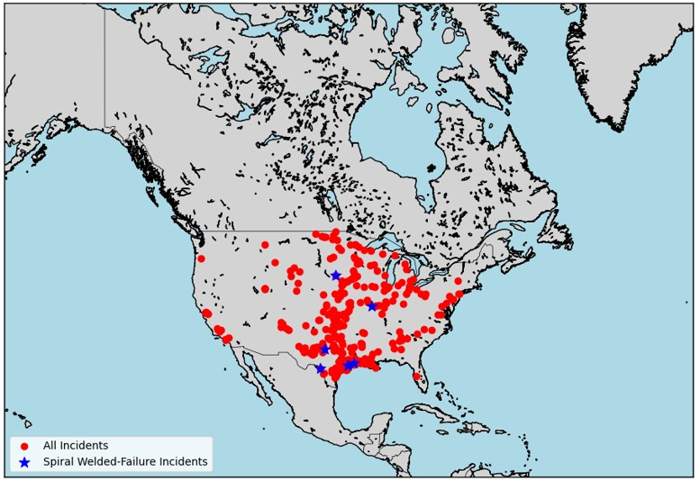
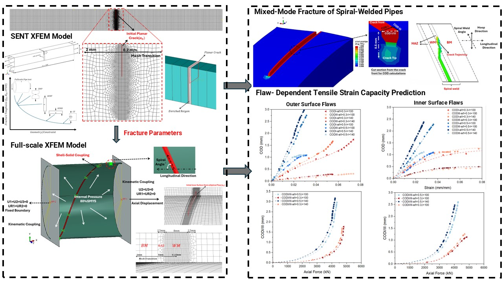
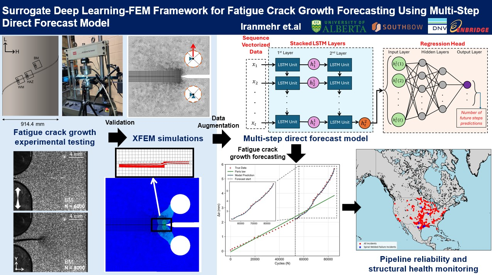
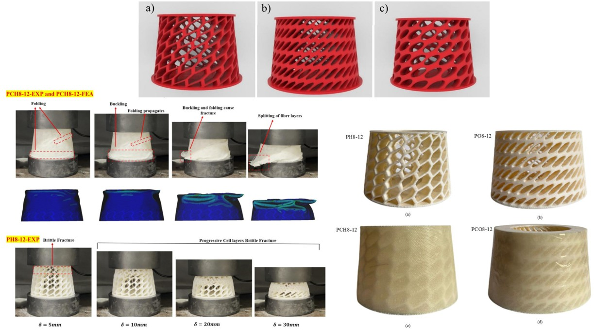

Selected Projects

Processed historical pipeline accident data to investigate mechanical and environmental failure routes and identify the main parameters affecting pipeline incidents. Applied statistical methods and machine learning to reveal failure trends across large operational datasets.
Focus: data analysis · engineering interpretation · failure trends · root-cause identification

Developed XFEM-based finite element models to predict the tensile strain capacity and fracture behaviour of spiral welded pipes and X70 pipeline steel under mixed-mode loading conditions. Results directly supported fitness-for-service assessments for energy pipeline operators.
Focus: crack behaviour · mixed-mode loading · structural integrity · API X70

Built a surrogate deep learning and XFEM workflow for fatigue crack growth prediction in welded pipelines. Generated fatigue datasets using parameters such as stress ratio, material zone, and stress range. The LSTM surrogate enabled rapid cycle-by-cycle predictions without repeated FEA runs.
Focus: fatigue crack growth · LSTM surrogate · data-driven modelling · welded joints

Investigated mechanical performance and damage behaviour of advanced lattice and metamaterial structures manufactured via polymer additive manufacturing and fibre-reinforced composites. Used parametric geometry tools and damage-based FEA to guide design optimisation.
Focus: lattice structures · metamaterials · damage mechanics · additive manufacturing

Designed industrial machinery components and injection molds for automotive interior applications with emphasis on functionality, manufacturability, and structural reliability. Applied GD&T standards and DFM principles throughout the design lifecycle.
Focus: DFM · GD&T · injection molding · industrial machinery · tooling design